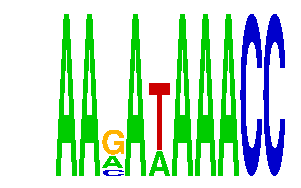

family_10 |
|---|
|  |
| Download PWM |
| Download instances (motifs) |
| Show motif distribution |
Query_ID | Query_Consensus | Subject_Name | Source_DB | Subject_ID | Length | Orientation | Offset | Divergence | Overlap | Subject_Consensus |
|---|---|---|---|---|---|---|---|---|---|---|
| family_10 | AAGATAAACC | RACCACAR | JASPAR | PF0111 | 8 | as given | 6 | 0.648 | 4 | AACCACAA |
| family_10 | AAGATAAACC | NFATC2 | JASPAR | MA0152.1 | 7 | reverse-complement | -3 | 0.713 | 4 | TTTTCCA |
| family_10 | AAGATAAACC | RUNX3 | HOCOMOCO | RUNX3_HUMAN.H10MO.C | 11 | reverse-complement | 5 | 0.802 | 5 | NNYTGTGGTTT |
Sequence | Start_position (from start) | Start_position (from end) | Average conservation | Best conservation score | Instance_with_best_CS | Best_Z-score | Instance_with_best_ZS | Strand |
|---|---|---|---|---|---|---|---|---|
| chr1:43248344-43250940 | 2379 | 2389 | 0.001 | 0.002 | AARAWAAACC | 13.908901 | AARAWAAACC | 1 |
| chr10:53058509-53062044 | 3160 | 3170 | 0.0175 | 0.047 | AARAWAAACC | 12.672812 | AANATAAACC | 1 |
| chr7:119885169-119886169 | 951 | 961 | 0.0001 | 0.001 | AANATAAACC | 12.672812 | AANATAAACC | 1 |
| chr14:21483110-21484110 | 824 | 834 | 0.6315 | 1 | AARAWAAACC | 12.672812 | AANATAAACC | 1 |
| chr11:11786694-11787694 | 124 | 134 | 0.0871 | 0.09 | AARAWAAACC | 12.672812 | AANATAAACC | -1 |
| chr5:100643632-100644632 | 161 | 171 | NA | NA | AANATAAACC | 13.908901 | AARAWAAACC | 1 |
| chr15:103072383-103073383 | 529 | 539 | 0.1439 | 0.923 | AARAWAAACC | 12.672812 | AANATAAACC | -1 |
| chr9:101097667-101099404 | 1124 | 1134 | 0.0965 | 0.145 | AANATAAACC | 12.672812 | AANATAAACC | 1 |
| chr7:148085594-148086594 | 968 | 978 | 0.001 | 0.003 | AANATAAACC | 13.908901 | AARAWAAACC | 1 |
| chr14:55584204-55585204 | 949 | 959 | 0.0052 | 0.029 | AARAWAAACC | 12.672812 | AANATAAACC | 1 |
| chr17:71370087-71371087 | 250 | 260 | 0.0241 | 0.033 | AARAWAAACC | 13.908901 | AARAWAAACC | 1 |
| chr2:77009423-77010423 | 270 | 280 | 0.0295 | 0.067 | AARAWAAACC | 12.672812 | AANATAAACC | 1 |
| chr9:120528540-120529540 | 298 | 308 | 1 | 1 | AARAWAAACC | 13.908901 | AARAWAAACC | -1 |
| chr19:36193489-36194489 | 683 | 693 | 0.0121 | 0.096 | AARAWAAACC | 13.908901 | AARAWAAACC | 1 |
| chr10:30557934-30559899 | 199 | 209 | 0.0011 | 0.005 | AARAWAAACC | 12.672812 | AANATAAACC | 1 |
| chr17:26987569-26988569 | 588 | 598 | 0.0114 | 0.016 | AARAWAAACC | 13.908901 | AARAWAAACC | 1 |